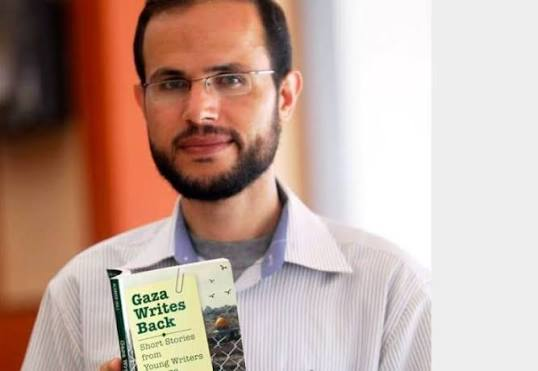
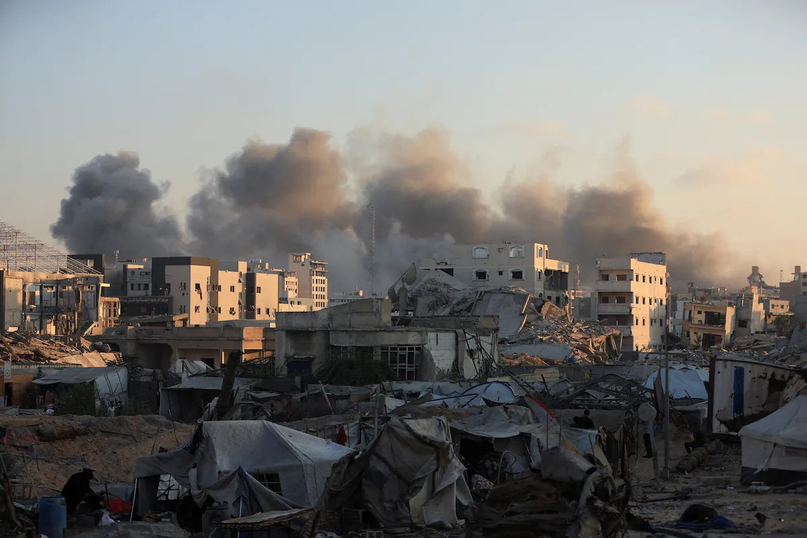
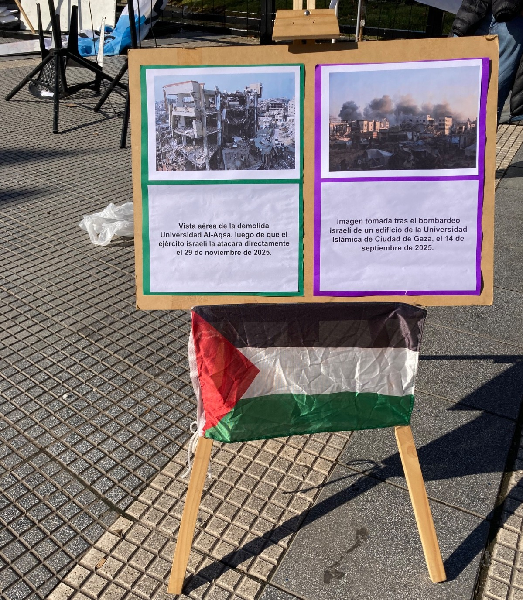

Movilización por Palestina en Buenos Aires, Argentina. Foto: AJVR.
Movilización por Palestina en Buenos Aires, Argentina. Foto: AJVR.
El genocidio y escolasticidio perpetrado por Israel en Palestina, enmarcado en un proyecto colonial y de apartheid, cuenta con la complicidad activa de las universidades israelíes: trabajan para la industria armamentística, ocupan tierras, reprimen a quienes se pronuncian contra el genocidio y segregan a estudiantes palestinos. En Argentina al menos catorce universidades públicas y privadas mantienen convenios vigentes con dichas instituciones. Hacemos un llamado urgente a quienes trabajan y estudian en las Universidades, a los sindicatos, centros de estudiantes y organizaciones de la Universidad a sumarse a la campaña global de Boicot Académico a Israel para exponer la complicidad de las universidades israelíes en el genocidio del pueblo palestino, aislar al régimen de apartheid de Israel y fortalecer la solidaridad internacional con Palestina.
Educación, colonización y sionismo
La colonización no es solo un proceso de dominación territorial, sino también cultural y epistémico. Los pueblos colonizadores justifican su proyecto supremacista mediante la inferiorización sistemática de otros pueblos, acompañado de la apropiación, asimilación y destrucción de su cultura. El sionismo, como proyecto colonial moderno, no escapa a esta lógica.
Surgido a finales del siglo XIX bajo el liderazgo de Theodor Herzl y como respuesta a la violencia contra las comunidades judías en Europa oriental, el sionismo se propuso como objetivo la creación de un Estado judío en Palestina. Este proyecto, que combinaba nacionalismo étnico, identidad religiosa y prácticas coloniales, encontró eco en las potencias europeas tras la Primera Guerra Mundial (1914–1918). En este contexto, Gran Bretaña, a través del Mandato Británico en Palestina (1917/23–1948), facilitó su implementación, promoviendo la migración masiva de europeos judíos, la adquisición y despojo de tierras palestinas y el fortalecimiento de grupos armados sionistas como el Irgun y la Haganá. Estos grupos desempeñaron un papel clave en el desplazamiento violento de la población palestina local, sentando las bases para conflictos futuros.
En 1947, la Organización de las Naciones Unidas (ONU) aprobó la Resolución 181, que recomendaba a los Estados aprobar y aplicar el plan de partición de Palestina en dos Estados: uno judío (que recibiría el 54% del territorio, a pesar de que los judíos representaban solo un tercio de la población y poseían en forma privada el 6 % de las tierras) y otro árabe (el 45% restante), mientras que Jerusalén quedaría bajo un régimen internacional. El plan no fue aprobado, e inmediatamente el sionismo comenzó la conquista y la limpieza étnica de toda Palestina. Este proceso, que desembocó en la creación del Estado de Israel en 1948, es conocido como la Nakba: la “catástrofe”, que marcó la expulsión de más de 700.000 palestinos de sus hogares y la destrucción de cientos de aldeas.
Luego, la creación del Estado de Israel en 1948 consolidó un sistema basado en la ocupación militar, el apartheid y la colonización por asentamientos. En este marco, la hebraización de la toponimia (cambio de nombres árabes por hebreos) y la destrucción sistemática de la memoria palestina se convirtieron en herramientas clave para borrar la presencia histórica palestina en la región.
Genocidio y escolasticidio
El ataque israelí contra Gaza desde octubre de 2023, con más de 70.000 palestinos asesinados, en su mayoría mujeres y niños, es la expresión más brutal de un proceso de devastación total, que incluye el intento de aniquilación de la identidad palestina, de su memoria y de su cultura a través de la destrucción sistemática de su infraestructura educativa; es decir un escolasticidio.

Refaat Alareer, poeta y académico palestino asesinado por Israel el 6/12/23
Este término fue utilizado por primera vez por la Dra. Karma Nabuls durante el ataque a Gaza de 2009, para describir “la destrucción sistemática de la educación palestina” por parte de Israel, lo que implica arrasar con la educación mediante el arresto, detención y/o asesinato de profesores, estudiantes y trabajadores del ámbito educativo, así como por la destrucción de la infraestructura educativa. Esto incluye también la eliminación de todos los niveles de educación, archivos, editoriales, centros culturales, museos y librerías. En contraposición a otros términos que fueron surgiendo, como educidio, etnocidio, ecocidio, domicidio, urbanicidio, las autoras Basma Hajir y Mezna Qato, proponen el uso de este término porque su “riqueza definitoria ha tenido mayor peso como acusación jurídica y, por lo tanto, de importancia política y estratégica. Esta riqueza se debe en gran parte a la rápida movilización de su uso por parte de grupos de derechos humanos, organizaciones de defensa jurídica y organizaciones de defensa de la infancia y la educación”.
Las universidades israelíes, cómplices del genocidio
En este proceso, las universidades israelíes no son instituciones neutrales, sino pilares activos del régimen de ocupación, apartheid y genocidio, cuya complicidad se manifiesta en múltiples dimensiones.

Vista aérea de la demolida
Universidad Al-Aqsa,
luego de que el ejército israelí la atacara directamente, obligando a miles de estudiantes a suspender sus estudios en la ciudad de Gaza el 29 de noviembre de 2025. (Mohammed Eslayeh / Anadolu vía Getty Images)
Una de las formas más evidentes es su colaboración directa con el ejército y la industria armamentística. La Universidad de Tel Aviv, por ejemplo, ha sido identificada como parte del desarrollo de la llamada "doctrina Dahiya", que justifica el uso desproporcionado de fuerza contra infraestructuras y poblaciones civiles y objetivos no militares como mecanismo de disuasión permanente, además de haber diseñado sistemas de armamento para las fuerzas israelíes. Por su parte, la Universidad de Haifa alberga tres academias militares en sus instalaciones, mientras que la Universidad Hebrea de Jerusalén cuenta con una base militar en su campus y ofrece formación a soldados. Otras instituciones, como el Technion, la Universidad Bar-Ilan, la Universidad Ben-Gurion y el Instituto Weizmann, mantienen vínculos estrechos con el ejército y empresas de armamento como Elbit Systems y Rafael, contribuyendo así a la maquinaria de guerra.
Además, estas y otras universidades israelíes son cómplices de la discriminación sistemática contra la población palestina. Todas ellas reprimen a estudiantes y docentes palestinos, condicionando su acceso a la educación superior y a puestos académicos.
La represión global contra la solidaridad con Palestina

Imagen tomada tras el bombardeo israelí de un edificio de la Universidad Islámica de Ciudad de Gaza, el 14 de septiembre de 2025.
El ataque a la educación palestina no se limita a Gaza. El actual genocidio en curso en Palestina pone de manifiesto la complicidad de las potencias coloniales occidentales con las políticas genocidas de Israel. En muchos rincones del mundo, las potencias coloniales y sus aliados persiguen a quienes denuncian el genocidio. En Reino Unido, por ejemplo, Universidades como Oxford derribaron monumentos en memoria de las víctimas de Gaza, mientras que en Aston, Nottingham y Bristol desalojaron por la fuerza a estudiantes que protestaban en contra del genocidio en Palestina. En EE.UU., más de 3.000 estudiantes y docentes han sido detenidos o sancionados por manifestarse. El gobierno de Trump revocó 1.700 visados de estudiante y, en 2025, declaró a los manifestantes como "terroristas nacionales".
En Argentina, entre otras campañas de persecución, represión y/o criminalización contra quienes alzan su voz en contra del genocidio en Palestina, en 2025 la diputada Vanina Biasi fue procesada por criticar el accionar de Israel contra el pueblo palestino. En julio de 2026, la proyección del documental "La Gran Palestina" en la Universidad Nacional de Rosario (UNR) desencadenó un ataque del gobierno de Javier Milei, quien acusó a la institución de "promover propaganda terrorista". El rector de la UNR, Franco Bartolacci, emitió un comunicado pidiendo disculpas a la comunidad judía, desvinculándose del evento, y dio “instrucciones a las áreas jurídicas correspondientes para iniciar las acciones que permitan determinar las responsabilidades del caso”, en una clara persecución a los organizadores del evento.
El caso palestino pone en evidencia de manera dramáticamente clara, el carácter genocida y colonial del capitalismo, el cual va a la par con el ataque a nivel global contra la disidencia, el pensamiento crítico y la libertad académica, ya que estos son incompatibles con un sistema de opresión y despojo.
El boicot académico: una herramienta de resistencia global
Doctor Hussam Abu Safiya, Director del hospital Kamal Adwan en el norte de la Franja de la Gaza. Detenido arbitrariamente por Israel el 27 de diciembre de 2024. Desde entonces permanece arrestado sin cargos. Fue víctima de golpizas y torturas. Es uno de los más de 9000 presos políticos palestinos que ha tomado Israel.
En este contexto, surgen inevitablemente dos preguntas: ¿cómo es posible que se lleve adelante este genocidio televisado en vivo y en directo y de forma tan impune? y ¿qué hacer? A la primera se responde con claridad: es posible gracias a la complicidad, activa o pasiva, de numerosos países, empresas, organismos y/u otras estructuras de poder.
La segunda pregunta, en cambio, exige una reflexión sobre los modos de acción de los pueblos y las formas de expresar su solidaridad. Y es aquí donde el boicot como herramienta adquiere un papel central por ser popular y no violento: denuncia en el espacio público lo callado, y promueve la acción en todos los ámbitos de la vida social. Ahí donde las potencias imperialistas se imponen militarmente e intentan asfixiar las resistencias populares mediante bloqueos y sanciones económicas, los pueblos tienen la posibilidad de unirse a través de campañas coordinadas de boicot. El término, acuñado en el marco de la resistencia del pueblo irlandés contra los terratenientes ingleses en la segunda mitad del siglo XIX, ha estado de hecho vinculado a otras múltiples luchas: desde el boicot organizado por las comunidades judías contra la Alemania nazi, pasando por el movimiento contra el apartheid en Sudáfrica, hasta las protestas en contra de la organización del Mundial de Fútbol en Argentina en 1978.
En el caso de la solidaridad con Palestina, esta estrategia emerge con el lanzamiento en 2005 por la sociedad civil palestina del movimiento Boicot, Desinversión y Sanciones (BDS), el cual establece que “el régimen israelí de colonialismo de asentamientos, apartheid y ocupación militar contra el pueblo palestino deriva su fuerza principalmente de la complicidad y el apoyo de gobiernos, corporaciones e instituciones”.
Más particularmente, la Campaña Palestina para el Boicot Académico y Cultural a Israel (PACBI), creada en 2004, insta a:
- - Rechazar cualquier cooperación con instituciones académicas israelíes.
- - Promover la desinversión en Israel.
- - Condenar institucionalmente las políticas israelíes.
- - Apoyar directamente a las instituciones palestinas sin exigirles colaboración con Israel.
La complicidad académica argentina
En Argentina, en el marco de las actividades desarrolladas por el Comité Argentino de Solidaridad con el Pueblo Palestino (quien es parte del movimiento BDS y lleva adelante sus campañas a nivel local), se vienen impulsando hace años acciones de boicot académico. Entre las actividades realizadas, se está promoviendo un relevamiento de las universidades argentinas que tienen convenios con universidades o instituciones educativas israelíes. Hasta el día de hoy, se han identificado 14 universidades con vínculos formales con instituciones israelíes:
Universidades privadas con convenios:
- Universidad de Palermo (UP)
- Universidad Argentina de la Empresa (UADE)
- Universidad Torcuato Di Tella (UTDT)
- Universidad de Morón
- Universidad Católica de Salta
- Universidad de San Andrés
- Instituto Tecnológico de Buenos Aires (ITBA)
- Universidad Católica de La Plata
Universidades públicas con convenios:
- Universidad Nacional de Córdoba (UNC)
- Universidad de Buenos Aires (UBA)
- Universidad Nacional de San Martín (UNSAM)
- Universidad Nacional de Cuyo (UNCuyo)
- Universidad Nacional de La Plata (UNLP)
Además, la Universidad Tecnológica Nacional (UTN) participa en los Premios Israel Innovation Network 2026. Estos convenios, enmarcados en "cooperación académica" e "intercambio de información", ratifican la complicidad con un régimen genocida. La falta de transparencia (solo 8 de 17 universidades públicas respondieron a pedidos de información) sugiere que la influencia sionista en la academia argentina es más profunda de lo que se reconoce.
Llamado a la acción: ¡Organizar el boicot académico ya!
El 19 de julio de 2024, la Corte Internacional de Justicia (CIJ) declaró a Israel culpable de apartheid y confirmó que su ocupación militar es ilegal bajo el derecho internacional. Esto implica que toda institución que colabore con universidades israelíes se convierte en cómplice de estos crímenes. El silencio o la "neutralidad" de las universidades no son opciones: son violaciones del derecho internacional.

El genocidio en Palestina y la complicidad de las universidades israelíes exigen una respuesta clara, urgente y organizada. El boicot académico es una herramienta que:
- - Expone la complicidad de las instituciones con el genocidio.
- - Presiona económicamente a Israel, aislando su régimen de apartheid.
- - Fortalece la solidaridad internacional con Palestina.
En Argentina, agrupaciones de docentes y estudiantes, así como la Asociación Gremial Docente de la UBA, ya se han sumado a la campaña. Llamamos a:
- - Sindicatos de docentes y no docentes de todas las universidades.
- - Centros de estudiantes y organizaciones estudiantiles.
- - Trabajadores y trabajadoras de la educación y la investigación.
No queremos ser cómplices. No permitiremos que nuestras universidades e instituciones de educación sean cómplices del apartheid, la ocupación y el genocidio. Exigimos espacios académicos libres de apartheid y colonialismo, críticos y solidarios con la lucha palestina y de todos los pueblos.
¡Sumate a la campaña de boicot académico a Israel!
¡Por una academia sin apartheid!
¡Viva Palestina libre!
Contacto: boicotacademicoarg@gmail.com